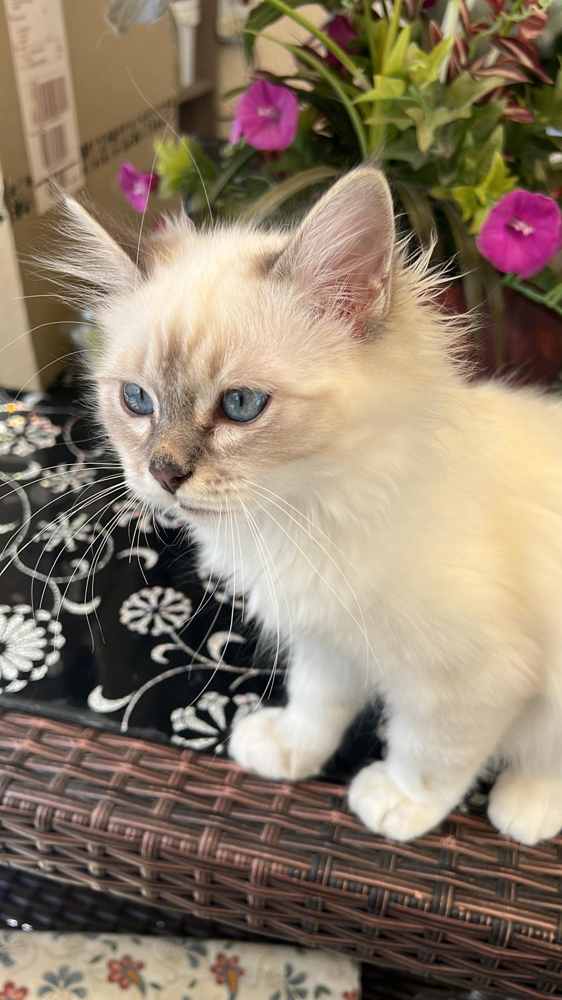
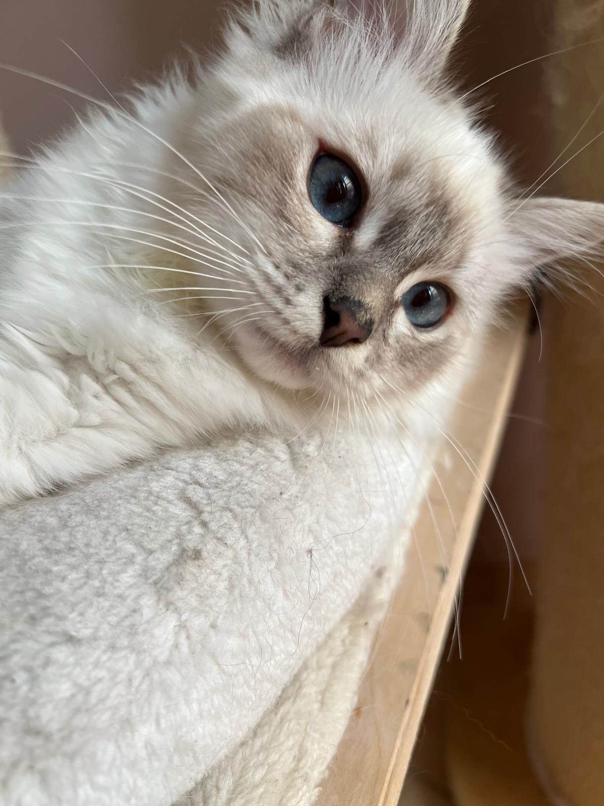
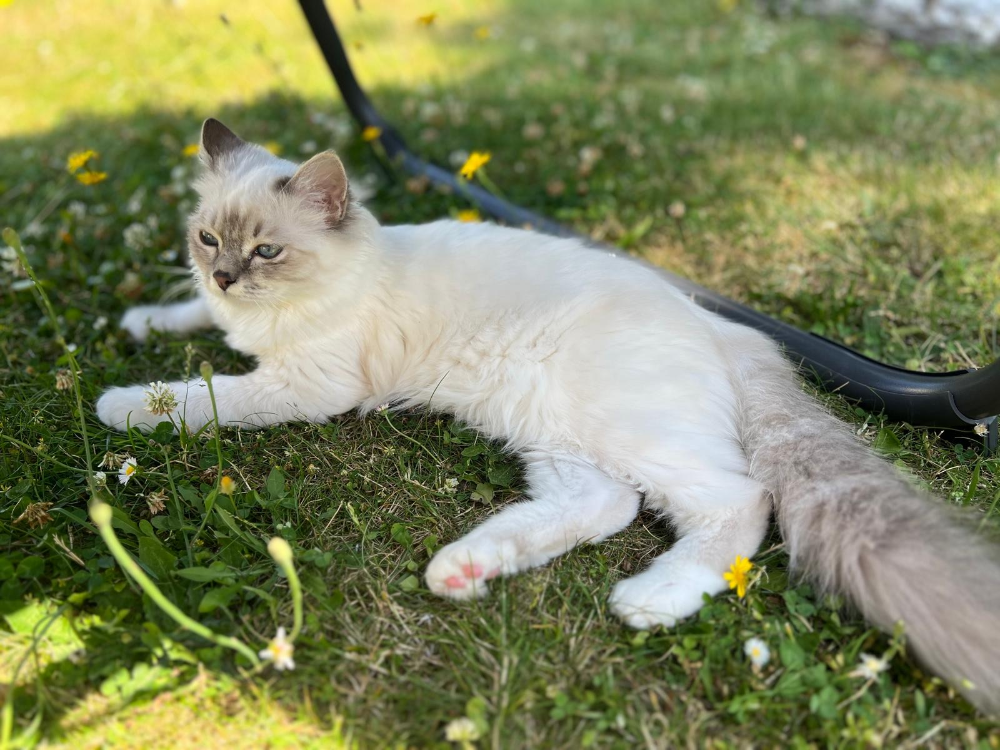
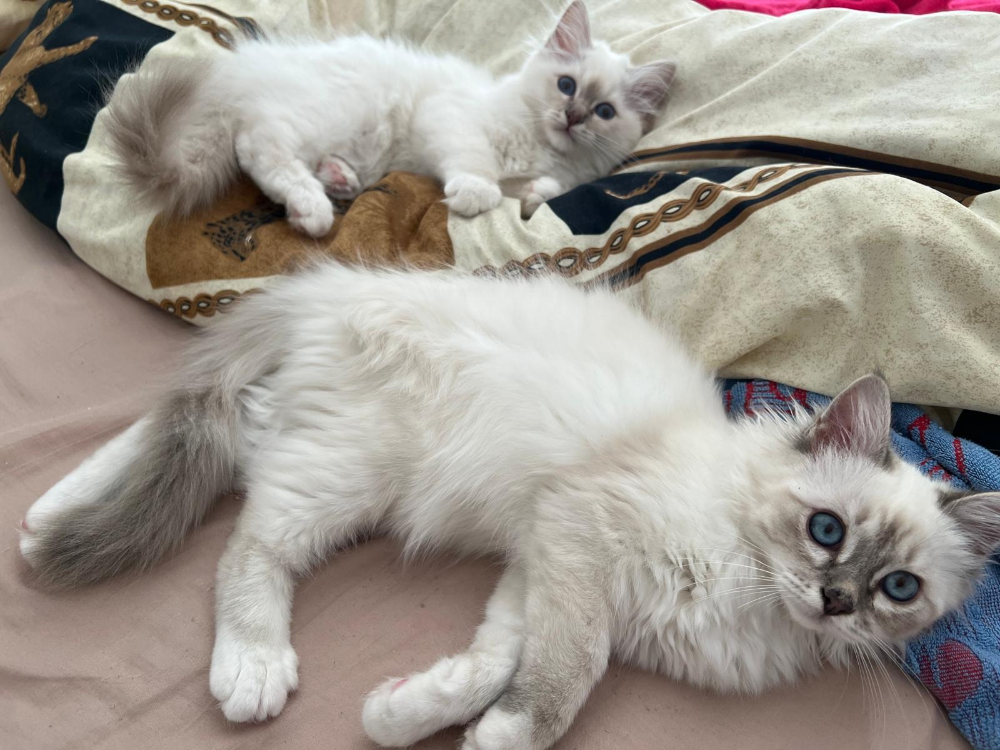

Luigi
Blue Silver Tabby Point
Luigi – die Ruhe in Person und ein echter Gentleman auf vier Pfoten
Wenn um ihn herum das Chaos tobt, bleibt Luigi einfach gemütlich liegen und schaut sich das Spektakel mit stoischer Gelassenheit an. Hektik? Kennt er nicht. Er ist so gutmütig, dass er keiner Fliege etwas zuleide tun könnte – nicht einmal der, die ihm frech auf der Nase landet.
Dafür liebt er Gesellschaft über alles: Ob Mensch oder Tier, bei ihm ist jeder herzlich willkommen, und kaum hat man sich hingesetzt, kommt er schon zum Schmusen vorbei. Genau dieses sanfte, gesellige Wesen wünschen wir uns für unsere Kitten.
- Geboren
- 29. Januar 2025
- Farbschlag
- Blue Silver Tabby Point
- Blutgruppe
- A
- Gesundheit
- HCM: Negativ
PKD: Negativ
FeLV / FIV: Negativ - Zucht
- Heilige Birma von Oldima